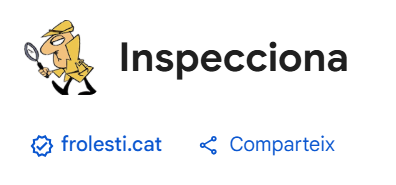

Què és Inspecciona?
Us presento Inspecciona, una nova extensió per a navegadors que et permet corregir textos en català a temps real, sense que els hagis de copiar i enganxar constantment a un corrector en línia. Simplement, escriu dintre del teu navegador i, un cop estigui l'extensió instal·lada, selecciona el text que vulguis comprovar. L'extensió automàticament et mostrarà els errors que detecta i et proposarà correccions.
Inspecciona fa servir els repositoris de codi de Softcatalà per tal d'oferir les correccions, el que significa que les correccions seran equivalents a les que t'oferiria el corrector de la pàgina oficial del Softcatalà, pàgina de referència entre la gent que encara es dedica a escriure (en català) i no ho deixa tot a l'albir del ChatGepeté.

Sobre l'extensió
El logo està inspirat en l'inspector Cloiseau (és més aviat un manlleu que una inspiració però que em denuncïi algú), un referent que la gent de la meva generació és probable que reconegui. Vigila que no t'enxampi fent faltes!
També us vull comentar que conté una funcionalitat prou interessant que és el buscador de sinònims. Quan seleccionis una paraula sola, l'extensió t'oferirà l'opció de trobar sinònims, alimentada altra vegada pels repositoris web de Softcatalà. Una altra funcionalitat que pot resultar interessant a la gent que encara escriu.
Quan estarà disponible?
Actualment, estic en converses amb la gent de Softcatalà per veure si podem col·laborar d'alguna manera, ja que seria interessant poder integrar al 100% l'extensió amb la seva API, així podrà estar al dia amb els canvis que hi puguin fer per part seva. De moment, per això, estic instal·lant els repositoris oberts de Softcatalà en un servei en línia per tal de poder replicar-ne la última versió i tenir una base estable per distribuïr un primer model de l'extensió. L'únic problema és que això costarà calers, així que estic investigant alternatives per tal de finançar aquests serveis. Si se t'acut alguna cosa, no dubtis en posar-te en contacte, i, en cas que vulguis col·laborar amb un petit donatiu, et deixo la meva pàgina de l'Aixeta per tal de que et puguis fer mecenes i contribuir.